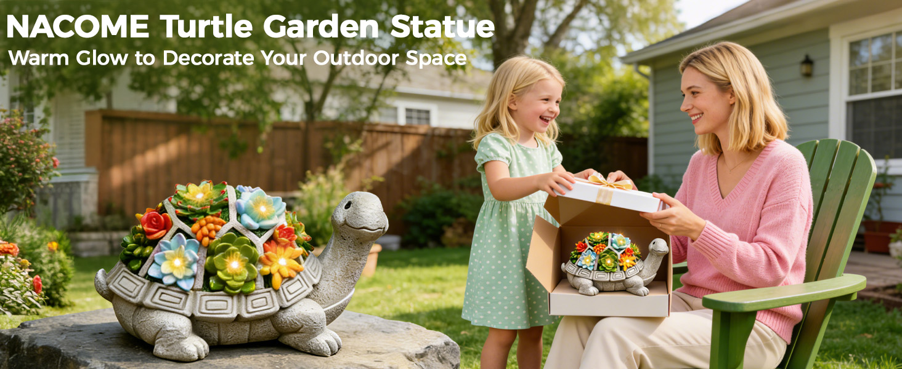
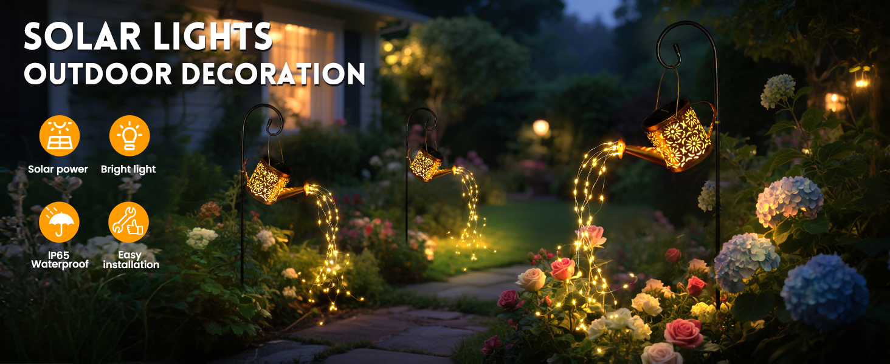
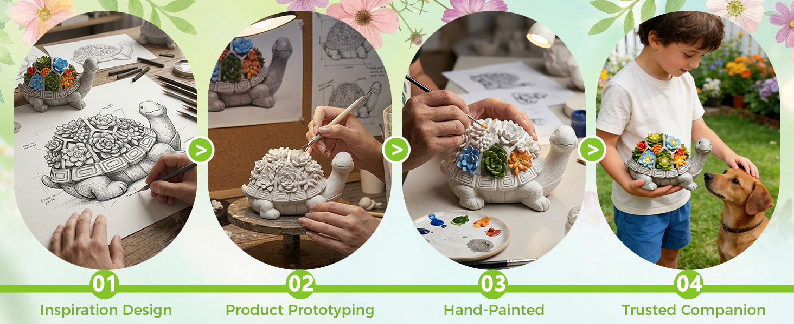
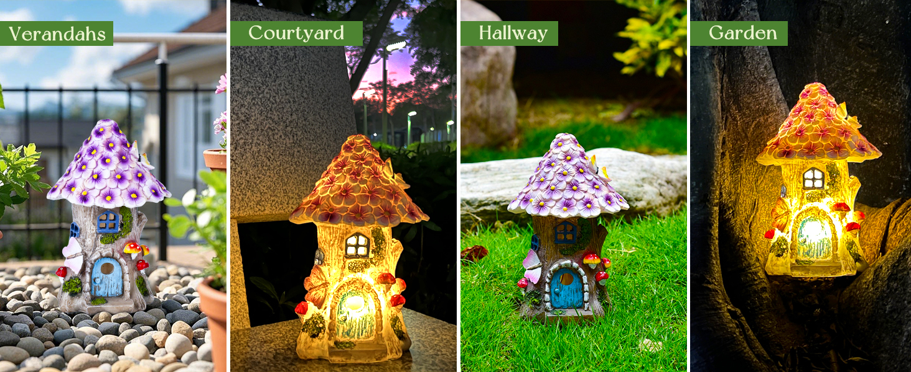
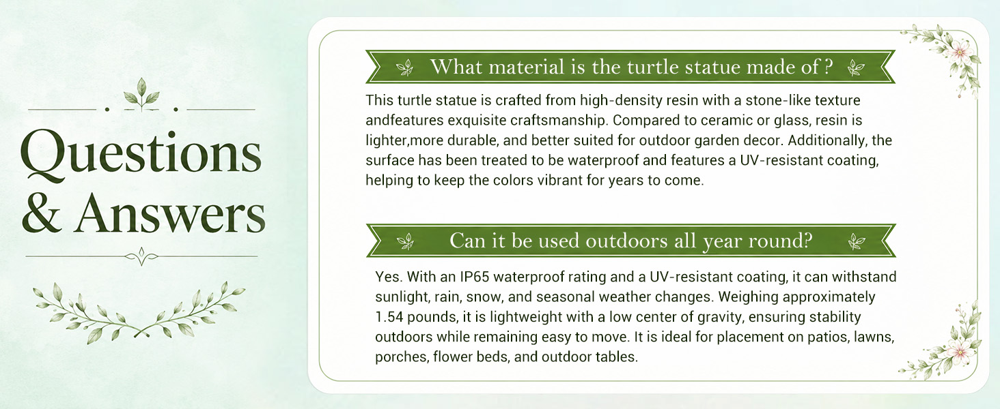
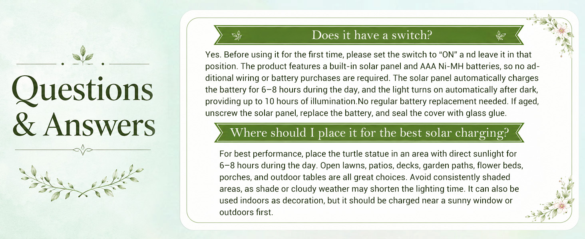
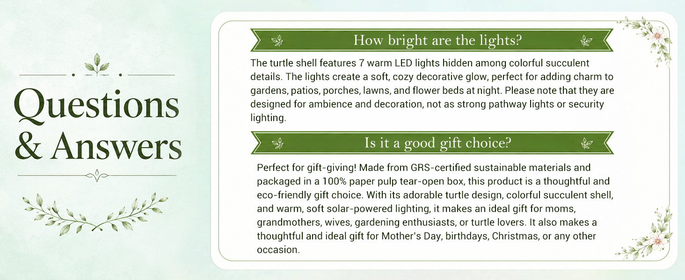

一句话结论：赢的不是“灯”，是“一只可爱的动物 + 一个能装东西的造型 + 几颗暖光 LED” + 一份送得出手的礼物。主图负责让人点进来，A+ 负责让人相信、让人决定买来送人。横幅普查数出来：夜景是绝对主流（45/97），圣诞占四分之一是 11 月快照的季节偏差，图标条、送礼画面、品牌名都只有三分之一到四成的人在用——这三样恰恰是我们最容易超过一半对手的地方。
送礼人群 Mom / Grandma / Women价格带 $14–28太阳能 + 自动亮灯暖白光IP65 防水NiMH 电池
先说证据口径：这次不是抽样，是横幅全量普查
底本是同一天归档的三份报告：户外造型灯 Top 100 · A+ 图片索引（100 款，97 款有 A+，共 691 张）、四款商品素材补采（第 67–70 名，26 张附图已人工分类）、畅销拆解（2026-10-27，头部公式与避坑）。
横幅普查：97 张全量逐张实看分类——97 款有 A+ 的商品，每款第 1 张 A+ 图（横幅）都看了，分 5 组交叉核对。第 51、60、63 名没有 A+，不在统计里。能确定的结构事实：每款 A+ 是 4–15 张，最常见 5–8 张；433 / 691 张是 1464×600 的横幅。
还没全量的是两块：A+ 第 2 张及之后的图只深看了 18 张（第 1 名全 7 张，第 2 名前 3 张，第 5 名前 2 张，第 10 / 25 / 50 / 67 / 80 / 100 名各第 1 张）；附图分类只覆盖第 67–70 名。下面的 A+ 8 类和附图 8 类里，凡是没标“普查”的，都是抽样结论，文中写明了。
排名是 2026-11-18 快照，不是实时排名。11 月中旬的快照自带圣诞偏差，读数的时候要记住这一点。
横幅普查：97 张横幅数出来是什么样
场景：夜景占近半，圣诞占四分之一
读法：横幅的第一选择是夜景，近一半的人都这么拍；白天花园只有 12 张，白底只有 1 张——横幅不是放白底产品图的地方，那是主图的活。“其他” 9 张里有万圣节门廊（第 68 名幽灵提灯）、秋收黄昏（第 36 名稻草人）、设计手稿（第 43 名）、手工坊（第 45 名）、雨天悬挂特写（第 79 名蜜蜂灯），都是节日或工艺的变体。
圣诞 24 张是季节偏差，不是全年常态。快照是 11 月 18 日，离黑五和圣诞不到一个月，圣诞款正在冲榜。21–40 名里圣诞占 8 张，是五个组里最高的。放到 3–6 月的花园季再普查，圣诞会大跌，夜景和白天花园会上升。所以我们的横幅要做两套：一套日常夜景（全年用），一套圣诞（11–12 月换上去），不要只做一套用到死。
三样东西都只有三分之一到四成的人在用
| 横幅上有没有 | 有 | 没有 | 什么意思 |
|---|---|---|---|
| 卖点图标条 | 41 张 · 42% | 56 张 | 一半以上的人没在横幅上放图标条。我们的横幅放上 5 个图标（太阳能、IP65、NiMH、手工上色、送礼），直接超过一半对手。 |
| 送礼元素 | 36 张 · 37% | 61 张 | 礼盒、递礼物、Gift 字样都算。只有三分之一多的人在横幅里讲送礼，但买家就是送礼的人，这是最容易捡的便宜。 |
| 品牌名或 logo | 37 张 · 38% | 60 张 | 六成横幅没有品牌。品牌名放上去，买家第二次看到就认得你，复购和关联款都靠它。 |
图标条里写什么最多（41 张有图标条的横幅里，文字可读的部分统计）
第 1 名是太阳能，约三分之二带图标条的横幅都有它；第 2 名是送礼（Unique Gifts / Gift Choice / Ideal Gift 等，约 14 张）；第 3 名是 IP65 防水（约 9 张，明确写 IP65 的）；第 4 名是手工上色 / 手工制作（约 6 张）。自动亮灯、易安装、节能、长续航各有几张。注意：有几张图标没有文字（第 5 名 6 个图标无文字、第 27 名 4 个图标无文字、第 66 名 4 个图标无文字），还有第 17 名图标条被裁切了一半——图标没文字等于没写，裁切等于白做，这两个错不要犯。
头部和尾部对比：前 20 名和后 20 名做法有什么不一样
| 前 20 名（第 1–20 名） | 后 20 名（第 81–100 名） | 读法 | |
|---|---|---|---|
| 夜晚花园 | 9 张 | 11 张 | 夜景是共识，不分头部尾部 |
| 圣诞冬季 | 5 张 | 2 张 | 圣诞款集中在中段（21–40 名 8 张），头部反而少，说明圣诞是季节冲榜，不是头部护城河 |
| 白天花园 | 4 张 | 5 张 | 差不多 |
| 图标条 | 10 张 · 50% | 8 张 · 40% | 头部略高，但没拉开差距 |
| 送礼元素 | 9 张 · 45% | 7 张 · 35% | 头部略高 |
| 品牌名 | 9 张 · 45% | 8 张 · 40% | 差不多 |
结论有点反直觉：横幅上头部和尾部拉不开差距。图标条、送礼、品牌这三样，头部只比尾部高 5–10 个百分点。真正拉开差距的是横幅之外的东西——第 1 名有 7 张 A+（工艺故事 + 太阳能全解 + 晒单 + 三连 Q&A），而尾部很多只有 4–5 张，而且容易出低级错（下面一节全是实名反面教材）。所以我们的打法不是把横幅做到 100 分，而是横幅做到 80 分（夜景 + 图标条 + 送礼 + 品牌，四样齐全），把力气花在横幅后面的 6 张 A+ 和主图上，那里才是差距。
反面教材：横幅最容易犯的 7 个错，全是真凭实据
普查里看到的错，每一个都有排名可查，照着避开就行：
1 · 横幅上一个字都没有。第 91 名猫头鹰提灯、第 93 名地精提灯，全图无任何文字。买家滑过去不知道这是什么、凭什么买。横幅至少要有一行主标题。
2 · 产品被裁出画面。第 34 名腊肠犬，产品大半被裁出画面；第 96 名熊，底部第二只熊被裁切。上传前自己在手机上看一遍，1464×600 裁切后产品还全不全。
3 · 没有产品实物图。第 70 名乌龟是卡通插画横幅，未见产品实物；第 87 名只有 Liulo Tool 一个品牌 logo，没有产品；第 94 名图中根本没有灯具产品。横幅必须出现真实产品，插画和 logo 只能当配角。
4 · 图标条被裁切。第 17 名黑熊母子底部图标条被裁切，第 19 名天使地插、第 86 名大象提灯底部文字被裁切。A+ 图片上传有安全边距，重要文字不要贴边。
5 · 图太小、没信息。第 22 名和第 38 名都是夜空树挂灯饰小图，无文字。横幅 1464×600 的版面只放一个小图，等于浪费第一屏。
6 · 亮灯时长夸大。第 65 名乌龟 + 多肉横幅写 8–12 小时工作时间。第 1 名只敢写 8–10 小时，而且前面写了要晒 6–8 小时。写 12 小时，差评会替你改回来。
7 · 防水等级写低还当卖点。第 20 名地精提灯写 IP44，第 79 名蜜蜂灯写 IP44。头部普遍写 IP65，写 IP44 等于告诉买家“我比头部差一档”。做不到 IP65 就不要把防水等级放横幅，放到 Q&A 里写清楚使用场景就行。
反过来，正面例子也记下来：第 12 名孩子送礼盒给奶奶（送礼 + 隔代亲情一次讲完）、第 13 名“The Gift of Sunshine”满桌礼盒鲜花、第 48 名递礼盒 + 开箱、第 62 名底部直接写开关使用提示、第 75 名底部打勾卖点文案、第 52 名直接用社媒晒单截图拼贴当横幅。好的横幅都有一个共同点：一句话 + 一个画面，3 秒能懂。
第 1 名全套拆解：7 张 A+ 每一张是干什么的
Nacome 乌龟是全榜第 1 名，7 张 A+ 是全榜最完整的作业，照着抄结构就行。下面按顺序拆，每张一句话：
| 第几张 | 类型 | 画面与文字 | 它在干什么 |
|---|---|---|---|
| 1 | 品牌横幅 | NACOME Turtle Garden Statue，白天花园大场景，右边女孩把礼盒递给妈妈 | 定调子：品牌 + 产品 + 送礼，三件事一张讲完 |
| 2 | 工艺故事 | 四格：设计灵感 → 打样 → 手工上色 → 成为陪伴，最后一格孩子抱着乌龟和狗 | 给“手工上色”一个证据，让买家觉得东西是用心做的 |
| 3 | 太阳能功能 | 白天“6 小时充满”+ 夜里“自动亮 8–10 小时暖光”，下面太阳能板特写和 ON / OFF 开关 | 回答“怎么用”：充电、亮灯、开关，全在一张里 |
| 4 | 买家晒单 | 四张社交卡片：头像、名字、点赞数、五星、评语，下面顺带露出同品牌猫咪和鸟浴盆 | 口碑 + 交叉卖货一次做完（但内容必须真实，见红线） |
| 5 | Q&A | 什么材质（高密度树脂、IP65、抗 UV 涂层）、能不能全年放户外 | 打消“放户外会不会坏”的疑虑 |
| 6 | Q&A | 开关怎么用（首次拨 ON）、AAA NiMH 电池、放哪儿充电最好（6–8 小时直射阳光） | 打消“不会用 / 充不上电”的疑虑，顺带说了 NiMH 电池 |
| 7 | Q&A | 灯有多亮（7 颗暖白 LED，氛围光不是照明灯）、送人合不合适（GRS 认证环保材料、100% 纸浆礼盒，送妈妈奶奶妻子都合适） | 打消“亮度”和“送人”两个疑虑，最后一句落到送礼上收尾 |
顺序本身就是销售漏斗：喜欢（横幅）→ 相信做工（工艺）→ 会用（太阳能）→ 别人也买（晒单）→ 没疑虑了（Q&A）。我们的 A+ 就按这个顺序做 5–7 个模块，模块可以少，但顺序不要乱。注意第 2 张的手绘和打样图 AI 感很重，细看会穿帮——结构照抄，图片换成真实拍摄。
营销分 6 个方面
方面 1站内视觉：主图 + A+ + 视频。这是离下单最近的一环，也是本页的重点。主图 7 张按顺序拍，A+ 按 8 类做，下面两节就是拍摄清单。横幅普查已经证明：横幅做到夜景 + 图标条 + 送礼 + 品牌四样齐全，就超过一半对手。
方面 2送礼人群：买家是送礼的人，不是园艺发烧友。头部标题里反复出现 Gifts for Mom / Grandma / Women。普查里 36/97 的横幅有送礼元素，第 12 名孩子送礼盒给奶奶、第 13 名“The Gift of Sunshine”满桌礼盒都是现成范本。A+ 第一张横幅就要出现送礼画面，Q&A 最后一问必须是“送人合不合适”。
方面 3节日与季节：3–6 月是主旺季，11–12 月是第二波。3–6 月花园季 + 母亲节，送礼标题前置 Mom / Grandma；11–12 月圣诞 + 乔迁礼物季，推成套与礼盒装；全年常驻 Housewarming / Birthday，不要只押一个节日。节日款提前 6–8 周换主图和横幅。具体日子见下面的 2027 时间线。
方面 4Facebook 自然流量：不投广告，靠“邻居口吻”晒单。发黄昏花园里的光、孩子和宠物跟灯的合影这种能让人想晒的图，文案不硬推，标签放末尾。A+ 里的场景图直接裁成社媒帖，一图两用，不用重拍。具体发什么见下面的 4 周日历。
方面 5信任与差评防御：先回答差评里最常问的三个问题。灯不亮 / 进水是头号死因，防水至少 IP44，头部做到 IP65；尺寸与照片不一致是头号退货源，主图必须放参照物；白天不好看就没有晒单和复购，白天颜值和夜景一样重要。普查的反面教材里，第 65 名夸大亮灯时长、第 20 名 IP44 当卖点，都是现成的教训。
方面 6价格与套装：$14–28 是送礼不心疼的区间。超过 $30 就要靠大尺寸、成套、特殊造型讲故事。件数写清写准：第 69 名商品页写 8 件装、A+ 模块写 16 件装，这种不一致会直接丢信任。
A+ 图片分 8 类：每类是干什么的、长什么样、我们怎么拍
示例图都是 2026-11-18 归档的 Top 100 商品原图，版权归原卖家所有，仅作分类研究参考。点图可打开归档原文件，商品名点开是亚马逊原页。第 1 类有普查数据支撑，其余 7 类来自 18 张深看抽样。
第 1 类 · 品牌横幅：第一张，定调子（必做）——普查：夜景 45/97，图标条 41/97，送礼 36/97，品牌 37/97
作用：买家滑到 A+ 区第一眼，知道这是什么牌子、什么东西、什么心情。普查里 97 张横幅的讲法分 4 种：夜晚花园（45 张）、圣诞冬季（24 张）、白天花园（12 张）、其他（9 张，含万圣节、秋收、手稿、手工坊、雨天特写）。
我们怎么做：横幅只做一种——夜间氛围 + 送礼画面 + 图标条。标题写产品名 + 一句暖话，不要堆参数；图标条固定 5 个：太阳能、IP65 防水、NiMH 电池、手工上色、送礼佳选。图标条是普查里出现最多的结构性元素，但只有 42% 的人在用，做了就超过一半对手。图标必须有文字，文字不要贴边（第 17 名图标条被裁切就是教训）。


第 2 类 · 工艺与品牌故事：让人觉得“这东西是用心做的”
第 1 名用 4 格讲完：设计灵感 → 打样 → 手工上色 → 成为陪伴，每格一张图，最后一格是孩子抱着乌龟和狗在花园里。作用不是讲技术，是给“手工上色”这个卖点一个证据。
我们怎么做：拍真实的，不要用 AI 生成的“设计手稿图”——第 1 名这张的手绘和打样图 AI 感很重，细看会穿帮。真实做法是：工厂手绘工位一张、上色特写一张、成品和孩子 / 宠物合影一张，三格就够。普查里第 43 名直接用设计手稿当横幅、第 45 名用手工坊当横幅，说明工艺本身可以当第一张，但我们建议放在第二张，第一张留给横幅。

第 3 类 · 太阳能功能：白天怎么充、晚上亮多久、开关在哪
第 1 名第 3 张是全榜讲得最清楚的一张：左边白天花园“6 小时充满”，右边夜里“自动亮 8–10 小时暖光”，下面两格是太阳能板背面特写和 ON / OFF 开关，配一句首次使用说明——先拨到 ON，不用再管。
我们怎么做：一张图讲三件事就够：晒 6–8 小时 → 自动亮 8–10 小时 → 开关拨 ON。红线两条：不要写 12–14 小时这种极端值，差评会反噬（第 65 名写 8–12 小时就是反面例子）；要写清“需要 6–8 小时直射阳光”，阴天和遮阴处亮不久是正常的，先写出来比被差评写出来强。普查里第 62 名在横幅底部直接写开关使用提示，这个做法可以抄到我们的功能图里。

第 4 类 · 摆放场景四格：告诉买家“放哪儿都好看”
第 5 名雪人用四格：花坛、庭院、阳台、窗台，每个格子标地名；第 50 名蘑菇屋也是四格：门廊、庭院、走廊、花园，而且白天夜晚混搭。作用是帮买家脑补自己家，四个场景等于四次“这适合我”的确认。
我们怎么做：选 4 个真实摆放点——花坛、门廊台阶、阳台桌、窗台，每个点一张实拍，白天两张、黄昏两张。不要全用夜景，也不要全用白天，混搭才像真摆在家里。


第 5 类 · 多角度外观：背面长什么样，先给买家看
第 2 名第 2 张是四视图白底图：正面、侧面、背面，背面那格能清楚看到太阳能板。作用很实际：减少“和照片不一样”的退货，也顺带证明太阳能板是真的装在产品上的。
我们怎么做：一张四视图就够，正面、侧面、背面（太阳能板）、细节（灯珠 / 上色）各一格，白底，不用修得太过，真实比精致重要。

第 6 类 · 夜间亮灯生活场景：有人在画面里，灯才有温度
第 7 类 · 买家晒单与口碑：有用，但只能用真的
第 1 名第 4 张是四张社交卡片：头像、名字、点赞数、五星、一段评语，标题叫 Garden Moments with Nacome Decor，下面还顺带露出同品牌猫咪和鸟浴盆两款，等于口碑 + 交叉卖货一次做完。普查里第 52 名更进一步，直接用社媒晒单截图拼贴当横幅。

第 8 类 · Q&A 答疑：把差评的问题提前答掉
第 1 名最后三张全是 Q&A，一张两问：什么材质（高密度树脂、IP65、抗 UV 涂层）、能不能全年放户外、开关怎么用、放哪儿充电最好、灯有多亮、送人合不合适。问的全是买家下单前会犹豫的事，答的全是差评高频点。注意它还顺带说了两句关键信息：用的是 AAA NiMH 电池（不是锂电），包装是 100% 纸浆可撕开礼盒。
我们怎么做：Q&A 只写 6 问，顺序照抄第 1 名：材质与防水 → 开关与电池 → 放哪儿充电 → 亮多久多亮 → 尺寸多大 → 送人合不合适。每一问的答案都要带一个可验证的数（IP65、6–8 小时、8–10 小时、7 颗 LED），不要写“非常亮”“超级防水”这种没法验证的词。



主图与附图分 8 类：复用第 67–70 名已做的人工分类
附图分类不用重做：四款商品素材补采已经把第 67–70 名的 26 张附图一张张看过、标过类。下面是把 21 个原始标签合并成的 8 类，直接拿来当我们的附图拍摄清单。
| 类 | 画面 | 在 67–70 名的原标签 | 我们怎么做 |
|---|---|---|---|
| 1 · 主图 | 产品白天实拍，脸清楚 | 主图 · 浇水壶 / 圣诞侏儒 / 火焰灯 / 猫咪蝴蝶 | 白天先看脸：树脂做工、上色均不均匀，白天就定了。主图不要用夜景。 |
| 2 · 夜景亮灯 | 黄昏或夜里亮起来的样子 | 日间充电与夜间亮灯、庭院日夜场景、投影光效 | 拍黄昏花坛里的光，不要只拍黑夜里的光点；同一张里最好有白天和夜里对比。 |
| 3 · 尺寸说明 | 参照物 + 尺寸数字 | 尺寸说明、尺寸与安装配件 | 手、花盆、门廊台阶做参照物；英寸 + 厘米双标；9–12 英寸是庭院款安全区。 |
| 4 · 太阳能与功能 | 充电、亮灯、开关、结构 | 太阳能充电与自动亮灯、产品结构与火焰效果、材质与结构细节 | 太阳能板特写一张，开关位置一张；火焰 / 投影等特殊光效单独一张。 |
| 5 · 防水与耐候 | 雨天、户外过夜 | 雨天防水功能、雨天场景与耐候功能 | 雨天实拍一张，IP 等级写在图上；不要只写“防水”，要写 IP44 还是 IP65。 |
| 6 · 场景与节日 | 摆在哪里、过什么节 | 节日庭院场景、节日室内场景、壁炉场景、家庭使用场景、节庆布置场景 | 庭院、门廊、阳台、壁炉各一张；圣诞款拍壁炉和门口，母亲节款拍花坛和餐桌。 |
| 7 · 送礼与包装 | 礼盒、开箱、送人 | 礼物与庭院场景、送礼场景、产品包装 | 礼盒开箱一张，盒子本身要好看——第 1 名把“100% 纸浆礼盒”写进 Q&A 就是在卖包装。 |
| 8 · 安装步骤 | 怎么装、配件有什么 | 安装步骤、尺寸与安装配件 | 地插款拍“插地”两步；套装拍配件全家福，件数和 A+ 保持一致。 |
直接照抄的两套顺序
主图 7 张顺序
1 · 白天主图（脸清楚）→ 2 · 黄昏夜景亮灯 → 3 · 尺寸参照（手 / 花盆）→ 4 · 太阳能板与开关 → 5 · 庭院场景 → 6 · 送礼与礼盒 → 7 · 雨天防水或安装步骤。7 张里至少 2 张是夜景，至少 1 张有人或宠物。
A+ 5–7 个模块顺序
1 · 品牌横幅（夜间氛围 + 图标条）→ 2 · 太阳能功能（充多久、亮多久、开关）→ 3 · 摆放场景四格 → 4 · 工艺故事（三格真实拍摄）→ 5 · 多角度外观 → 6 · Q&A（6 问）→ 7 · 买家晒单（有真实评价再上，没有就空着）。第 1 名的 7 张就是这个顺序，照抄结构，换成我们的实拍。
Facebook 4 周发帖日历：每周 3 条，不硬推
口吻按本店已定的规矩：邻居口吻，不硬推，标签放末尾。图全部从 A+ 场景图里裁，不用重拍。一周 3 条的节奏是：周二场景、周四知识、周六人情。
| 周 | 周二 · 场景 | 周四 · 知识 | 周六 · 人情 |
|---|---|---|---|
| 第 1 周 | 黄昏花坛里的光（用 A+ 夜景图）：“天刚暗的时候，花坛自己亮了。” | 太阳能怎么充：白天晒 6–8 小时，晚上自动亮，开关拨 ON 就不用管了。 | 孩子和灯的合影：“她每天晚上都要先跟乌龟说晚安。” |
| 第 2 周 | 四个摆放点拼图（用 A+ 四格图）：花坛、门廊、阳台、窗台，你家会放哪？ | 尺寸实话：9–12 英寸放庭院刚好，拿手比一下就知道多大。 | 妈妈收礼物的瞬间：女儿送的乌龟灯，放在门廊第一晚就亮了。 |
| 第 3 周 | 雨天实拍：下雨也不怕，IP65，雨停了照样亮。 | 白天也要好看：树脂做工、上色，关了灯它也是个摆件。 | 宠物和灯：狗路过都要闻一闻，猫直接睡旁边。 |
| 第 4 周 | 礼盒开箱三连拍：盒子、撕口、灯亮起来的样子。 | 送礼清单：妈妈、奶奶、爱园艺的朋友、刚搬新家的邻居，各适合哪一款。 | 买家晒单转发：真实买家的花园照片，配一句他的原话，不加滤镜。 |
标签放末尾，例如：#SolarGardenLights #GardenDecor #GiftForMom #BackyardGlow。不要每条都放购买链接，一周最多一条带链接，其余只讲花园和光。
2027 年节日时间线：什么时候换图、什么时候发帖
日期按美国东部时间核过。换图和发帖都要提前 6–8 周，备货和拍摄再往前推一个月。
| 节点 | 日期（2027 年） | 做什么 |
|---|---|---|
| 情人节 | 2 月 14 日周日 | 不主推，顺带一句“送爱园艺的她”。不用换横幅。 |
| 春分，花园季开始 | 3 月 20 日周六 | 换回日常夜景横幅；Facebook 开始每周 3 条；母亲节款现在开拍黄昏夜景。 |
| 母亲节（主旺季） | 5 月 9 日周日 | 4 月初换母亲节横幅（送礼画面 + Mom / Grandma 标题）；4–5 月发帖全部围绕送礼；5 月 9 日当天发买家晒单。 |
| 夏至 | 6 月 20 日周日 | 花园季收尾，推成套和庭院组合装；换回日常横幅。 |
| 万圣节 | 10 月 31 日周日 | 只推幽灵、南瓜这类节日款（第 68 名就是范本），9 月中旬换图。 |
| 黑五 | 11 月 26 日周五 | 11 月初换圣诞横幅；成套和礼盒装上折扣位；Facebook 发开箱和礼盒。 |
| 圣诞节 | 12 月 25 日周六 | 12 月 20 日前下单能到货的写法写清楚；12 月 26 日换回日常横幅。 |
自查打分：勾完就知道自己的 listing 缺什么
下面 16 项，每项 1 分，满分 16 分。勾上你已经有的，分数实时算。12 分以下先补主图和横幅，12–14 分补 Q&A 和晒单，15 分以上只剩细节。
0 / 16
先勾选你已经有的项。
主图 7 张
A+ 8 类（晒单那项没有真实评价可以先不勾）
基础 1 项
红线与还没核实的事
已核实：横幅 97 张全量逐张实看分类，场景、图标条、送礼、品牌四组数是普查数；第 1 名 7 张 A+ 全看过；附图 26 张是第 67–70 名的人工分类；2027 年节日日期按美国东部时间核过。
未核实：A+ 第 2 张及之后的图只深看了 18 张，各类占比没有全量统计；附图分类只覆盖第 67–70 名，其余 96 款的附图还没采；图标条内容统计只算了文字可读的部分，无文字图标和被裁切的没算进去；价格、月销、排名都是 2026-11-18 快照，榜单每小时会变；Facebook 日历是按本店“付费效果差、转纯自然增长”的已有结论排的，没有新的投放数据。
下一步最值得做的三件事：先按自查打分工具把我们自己的 listing 打一遍分，缺的项按主图 7 张 + A+ 8 类去拍；把第 67–70 名之外的附图按同样 8 类补采，看到底哪类出现最多；母亲节款（3–6 月）现在就开始拍黄昏夜景，不要等到 3 月。
来源
底本：户外造型灯 Top 100 · A+ 图片索引 · 2026-11-18（100 款、97 款有 A+、691 张；第 51、60、63 名未见 A+；第 69 名 8 件装对 16 件装）· 四款商品素材补采 · 2026-11-18（第 67–70 名，26 张附图人工分类）· 畅销拆解 · 2026-10-27（头部公式、买家画像、避坑三条、季节节奏）。示例图片与商品名版权归原卖家所有，仅作选品研究参考。研究方式：97 张横幅逐张实看分类；A+ 其余图片按采集顺序抽样深看并分类；未逐张核查的部分已在文中标明。2026-11-18 晚扩充：横幅普查、反面教材、第 1 名全套拆解、Facebook 日历、2027 时间线、自查打分。配套 A+ 结构 YAML：figurine-lights-aplus-structure.yaml（7 个模块、图标条、Q&A 六问、16 项自查）。